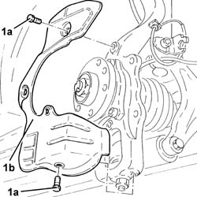
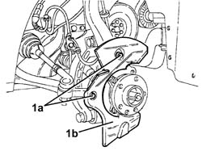

3310A59 FRONT BRAKE DISC GUARD - R R
- Path
- Procedures > 33 BRAKING SYSTEM > 3310 DISC BRAKES > 3310A FRONT DISC BRAKES > 3310A59 FRONT BRAKE DISC GUARD - R R
- Kind
- repair procedure (removal / refitting; the operation number is the code)
- Applies to
- all engines; all production periods
- Interactive page
- https://sloeber94.github.io/elrnDB-aGt/en/#/125001319
Applies to: engines: 1.8 T.SPARK, 2.0 JTS, 1.9 JTD 16V; all production periods
 Removing
Removing
 Refitting
RefittingPosition the vehicle on the ramp
Proceed with removal
Op. 4450B10 TYRE INFLATION VALVE CAP - REPLACE
Proceed with removal
1. Undo the bolts (1a) and remove the front brake disc shield (1b).
Op. 3310A48 FRONT BRAKE DISC - R R

Applies to: engines: 1.8 T.SPARK, 2.0 JTS, 1.9 JTD 16V; all production periods
Refitting
RemovingPlace the front brake disc shield back in its housing and fix it using the bolts.
Proceed with refitting
Op. 3310A48 FRONT BRAKE DISC - R R.
Proceed with refitting
Op. 4450B10 TYRE INFLATION VALVE CAP - REPLACE.
Remove the car from the ramps.
Applies to: engines: 3.2 V6; all production periods
Removing
RefittingPosition the vehicle on the ramp
Ensure that the ignition key is in OFF position, then disconnect the battery negative terminal (-).
Name | Connector | |
|---|---|---|
- | Battery | See A1B BATTERY ( BATTERY NEGATIVE ) |
Proceed with removal
Op. 4450B10 TYRE INFLATION VALVE CAP - REPLACE
Proceed with removal
Proceed with removal
Op. 3310A30 FRONT BRAKE CALIPER ONE R R
1. Undo the bolts (1a) and remove the front brake disc shield (1b).
Op. 3310A48 FRONT BRAKE DISC - R R

Applies to: engines: 3.2 V6; all production periods
Refitting
RemovingPlace the front brake disc shield back in its housing and fix it using the bolts.
Proceed with refitting
Op. 3310A48 FRONT BRAKE DISC - R R.
Proceed with refitting
Op. 3310A30 FRONT BRAKE CALIPER ONE R R.
Top up the brake-clutch fluid level
Op. 0010T64 BRAKE AND OR CLUTCH FLUID CHECK LEVEL AND TOP UP AS NECESSARY.
Top up the brake-clutch fluid level
Op. 0010T65 HYDRAULIC BRAKE SYSTEM BLEED AIR.
Proceed with refitting
Op. 4450B10 TYRE INFLATION VALVE CAP - REPLACE.
Connect the negative (-) battery terminal
Remove the car from the ramps.